176 — TIPS/DIPS: chỉ định, kỹ thuật & theo dõi shunt (thông – hẹp – huyết khối, bệnh não gan) / Transjugular intrahepatic portosystemic shunt
Tags: pattern:shunt-cua-chu vung:gan vung:mach-cua score:PPG protocol:Doppler-sieu-am protocol:DSA-do-ap-luc
Mức chắc chắn (certainty): tổng hợp y văn (literature synthesis) — nhóm tự biên từ y văn mở (CVIR Endovasc 2024 PMC10781922; Sci Rep 2022 PMC8894460; Diagnostics 2021 PMC8472159; Ultrasound Int Open 2024 PMC11863994; Liver Int 2026 PMC13562823; Liver Int 2026 PMC12717333; Clin Transl Gastroenterol 2026 PMC13593234; JHEP Rep 2026 PMC13000493; Diagnostics 2025 PMC12650949; BMC Surg 2026 PMC13214368; Front Radiol 2026 PMC13469255; J Vasc Surg Cases 2026 PMC13099945; JKSR 2026 PMC13062374; BMJ Open Gastroenterol 2026 PMC13599983; Cureus PMC13645364), số liệu lấy nguyên từ bài gốc.
Câu hỏi gốc của bài: bệnh nhân xơ gan đã đặt TIPS (hoặc đang được chỉ định TIPS) quay lại với tái xuất huyết/tái báng bụng, hoặc ngược lại bệnh não gan (hepatic encephalopathy – HE) — làm sao trên siêu âm Doppler, CT và chụp mạch đo áp lực trả lời được shunt còn thông hay đã hẹp/tắc, hẹp ở đâu, và khi nào cần nong/đặt thêm stent? Điểm tựa: TIPS là ống nối nhân tạo giữa tĩnh mạch gan và tĩnh mạch cửa. Mọi bất thường đều quy về 3 câu hỏi: (1) gradient áp lực cửa–chủ (portosystemic pressure gradient – PPG/PSG) còn dưới ngưỡng không? (2) stent có thông suốt không, hẹp ở đầu nào? (3) máu đi tắt qua gan nhiều quá gây HE chưa?
1. Tổng quan bệnh học – cơ chế hình ảnh
A. TIPS/DIPS là gì – cơ chế hạ áp lực cửa:
- TIPS (transjugular intrahepatic portosystemic shunt – shunt cửa–chủ trong gan qua đường tĩnh mạch cảnh): luồn ống qua tĩnh mạch cảnh trong → tĩnh mạch chủ dưới (IVC) → tĩnh mạch gan → xuyên nhu mô gan → nhánh tĩnh mạch cửa (thường nhánh phải), rồi đặt stent phủ (covered stent-graft) giữ thông đường hầm. DIPS (direct intrahepatic portosystemic shunt): đường hầm đi thẳng từ IVC xuyên nhu mô gan vào tĩnh mạch cửa (giữ lại khi không tiếp cận được tĩnh mạch gan thuận lợi).
- TẠI SAO hạ được áp lực cửa: shunt mở một "van xả" từ hệ cửa áp lực cao sang hệ chủ áp lực thấp, làm giảm gradient áp lực cửa–chủ (PPG/PSG). Tăng áp cửa có ý nghĩa lâm sàng (CSPH) khi HVPG ≥ 10 mmHg; biến chứng (vỡ giãn tĩnh mạch, báng) bùng phát khi HVPG ≥ 12 mmHg (PMC13645364). Đích sau TIPS: PPG < 12 mmHg; rối loạn huyết động (hemodynamic dysfunction – HD) định nghĩa là PPG ≥ 12 mmHg (PMC11863994).
- TẠI SAO hình ảnh lại như vậy: stent là kim loại + màng ePTFE → trên CT là cấu trúc dải tăng đậm độ có giả ảnh (artifact); trên siêu âm Doppler là tín hiệu dòng tốc độ cao trong nhu mô gan, phụ thuộc góc chùm tia; trên DSA là đường hầm cản quang nối tĩnh mạch gan–tĩnh mạch cửa, cho phép đo trực tiếp PPG (hiệu áp giữa tĩnh mạch cửa và tĩnh mạch chủ dưới/tĩnh mạch gan).
B. Chỉ định (số liệu từ các cohort dưới):
- Dự phòng thứ phát xuất huyết giãn tĩnh mạch (chỉ định hàng đầu — 83,7% trong một cohort 86 bệnh nhân) và báng bụng kháng trị/tái phát (31,4%) (PMC11863994).
- Huyết khối tĩnh mạch cửa (portal vein thrombosis – PVT): PVT gặp ở ~1% dân số nhưng tới 44% ứng viên ghép gan; vận tốc dòng cửa < 15 cm/s là yếu tố dự báo độc lập trong xơ gan. PVR-TIPS (tái thông cửa + TIPS) đạt thành công kỹ thuật 75–100%, giúp nối cửa–cửa khi ghép gan 96–100% (PMC13469255). Cohort TIPS cho PVT (36 bệnh nhân): thành công đặt 100%, thời gian thông (patency) trung bình 40,3 ± 40,2 tháng, rối loạn 30,3%, trẻ em nguy cơ cao hơn (HR 4,85) (PMC12650949).
- Các chỉ định khác trong gamut: hội chứng Budd-Chiari, hội chứng tắc xoang gan (SOS/HSOS), tràn dịch màng phổi do gan (hepatic hydrothorax), hội chứng gan thận (PMC13593234, PMC13469255).
- Chỉ định cấp trong suy gan cấp–mạn (ACLF): TIPS giảm tử vong 28 ngày 5,1% vs 22,0% (HR 0,22 [0,06–0,77]) nhưng hết lợi sau 90 ngày → coi là cầu nối tới ghép gan (PMC13593234).
C. TẠI SAO TIPS lại hại – bệnh não gan (HE):
- Máu tắt qua gan giảm khử amoniac tại gan → HE. Meta-analysis 27 nghiên cứu / 3.934 bệnh nhân / 862 ca HE (PMC13214368): yếu tố nguy cơ tuổi (MD +4,12 năm), Child-Pugh C (OR 2,87), tiền sử HE (OR 3,28), tăng amoniac trước mổ (MD +8,02 µmol/L), hạ natri (MD −3,85 mmol/L), tràn dịch màng phổi (OR 2,45), giảm PPG không đủ (MD +2,31 mmHg); Child-Pugh A (OR 0,45) và stent đường kính ≥ 8 mm (OR 0,58) là yếu tố bảo vệ.
- Mâu thuẫn có thật (phản biện theo Argon): phân tích gộp quan sát nói stent ≥ 8 mm bảo vệ (OR 0,58), nhưng RCT chất lượng cao lại cho stent 7 mm giảm HE: HE rõ (overt HE) 20,7% (7 mm) vs 35,9% (8 mm), tích lũy 2 năm 21,4% vs 37,2% (p = 0,02) mà rối loạn shunt không khác (8,7% vs 8,7%) và tái xuất huyết không khác (10,9% vs 9,8%) (PMC13562823). → Trên thực hành: chọn đường kính/giãn bóng "vừa đủ" theo cơ địa gan (gan nhỏ, nguy cơ HE cao → ưu tiên 7 mm hoặc shunt bị hạn chế đường kính cTIPS).
- cTIPS (constrained TIPS – đặt stent 6 mm bên trong để hạn chế đường kính): PPG sau TIPS 7 mmHg (cTIPS) vs 6 mmHg (sTIPS); HE ít hơn (4 vs 14, p = 0,042) nhưng rối loạn/nong lại nhiều hơn (rối loạn 9 vs 1; nong lại 13 vs 7) (PMC12717333) → đánh đổi "giảm HE ↔ tăng huyết khối/tái can thiệp".
D. Ngưỡng định lượng mấu chốt (Argon – cửa 1):
- Đích PPG < 12 mmHg; HD = PPG ≥ 12 mmHg (PMC11863994).
- Siêu âm Doppler: HD có vận tốc tĩnh mạch cửa (PVV) thấp hơn — 35 (20–45) vs 40,5 (35–50) cm/s, p = 0,02; ΔPVV so với ngay sau TIPS giảm −8,2 ± 20,2 cm/s khi HD vs +6,08 ± 19,8 cm/s khi không HD. Cut-off PVV 40,5 cm/s → AUROC 0,705; thêm ΔPVV (cut-off 9,5 cm/s) → AUROC 0,78 (PMC11863994).
- HD xảy ra ở 43% ca, trong đó 67,5% không có triệu chứng → "shunt hỏng âm thầm" rất thường gặp, phải theo dõi hình ảnh chứ không chỉ theo triệu chứng (PMC11863994).
- Rối loạn shunt ≤ 20% trong 1 năm (stent-graft Fluency) (PMC10781922).
- Sau nong lại/nâng cấp: PSG 18,5 mmHg → 8 mmHg (p < 0,001) (PMC10781922).
2. Mẫu hình + chẩn đoán phân biệt theo vị trí (Gamut)
Gamut theo VỊ TRÍ hẹp trên stent (4 kiểu DAF — dysfunctional-associated features):
- Type 1 — hẹp ĐẦU GAN (cranial/hepatic vein end), ngay sau đuôi stent: hay gặp nhất 69,7% → do stent không phủ đủ lên hợp lưu tĩnh mạch gan–IVC. (PMC10781922)
- Type 2 — hẹp TRONG stent ở đoạn tĩnh mạch gan: 15,2%. (PMC10781922)
- Type 3 — hẹp/gấp khúc (kink) đoạn trong nhu mô hoặc đầu cửa: 6,1%. (PMC10781922)
- Type 4 — TẮC HOÀN TOÀN shunt: 9,1%. (PMC10781922)
- Thời gian tới nong lại trung vị 10,4 tháng (PMC10781922).
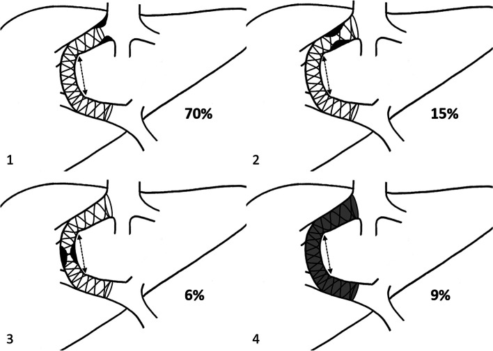
Sơ đồ phân bố 4 kiểu rối loạn TIPS liên quan đến vị trí hẹp: type 1 (đầu gan), type 2 (trong stent đoạn tĩnh mạch gan), type 3 (trong nhu mô/đầu cửa), type 4 (tắc hoàn toàn). Nguồn: CVIR Endovasc 2024 (PMC10781922), CC BY 4.0.Gamut theo BỐI CẢNH lâm sàng:
- Tái xuất huyết/tái báng + PPG ≥ 12 → hẹp/tắc shunt (thường đầu gan).
- HE mới/xấu đi (không có hẹp): shunt "quá tốt" (đường kính lớn) hoặc cTIPS chưa giãn đủ; xét giảm đường kính (reduction) hoặc chỉnh thuốc.
- Sốt/nhiễm trùng stent: viêm nội mạc stent (hiếm), "endotipsitis".
- Nhu mô gan xung quanh: ung thư biểu mô tế bào gan (HCC) có thể xâm lấn/tắc shunt; u tân sinh khác.
- Giải phẫu: shunt cửa–chủ tự phát (spontaneous portosystemic shunt – SPSS) tồn tại song song — thuyên tắc SPSS làm GIẢM rối loạn TIPS (HR 0,319) (PMC8894460); giãn tĩnh mạch dạ dày (GV) gặp ở 20% người tăng áp cửa, đường vào/ra (phân loại Kiyosue) quyết định chọn TIPS vs thuyên tắc ngược (RTO) (PMC13599983).
Mnemonic "STENT" cho TIPS rối loạn: Stenosis đầu gan (type 1) · Thrombosis/tắc (type 4) · Encephalopathy (HE do shunt quá lớn) · Narrowing trong stent (type 2–3) · Tumour/PVT (HCC, huyết khối cửa).
3. Bảng so sánh phân biệt (ma trận đối chiếu)
| Thực thể (entity) | Hình ảnh điển hình (US/CT/DSA) | Chốt vào (rule-in) | Chốt loại (rule-out) | Gợi ý xác nhận |
|---|---|---|---|---|
| TIPS thông tốt | Doppler: dòng liên tục trong stent, đồng nhất; CT: stent thẳng, lòng thấm thuốc | PPG sau TIPS < 12 mmHg + dòng Doppler đồng nhất + hết triệu chứng | Không đánh giá chỉ bằng hình thái — phải đối chiếu PPG | Doppler ± CEUS định kỳ; chỉ chụp mạch khi nghi |
| Hẹp ĐẦU GAN (type 1) | Hẹp ngay sau đuôi stent trong tĩnh mạch gan; DSA thấy chỗ thắt + PPG tăng | PPG ≥ 12 mmHg + hẹp đầu gan trên DSA; khoảng cách đuôi cranial–IVC ≥ 1 cm (PMC8894460) | Hẹp trong nhiều thì cố định mới thật (không phải co thắt) | Nong bóng + nối dài stent (extension) tới gần IVC |
| Hẹp TRONG stent / kink (type 2–3) | Hẹp dọc thân stent hoặc gấp khúc đoạn nhu mô/đầu cửa | Hẹp trong stent + PPG tăng + tái phát triệu chứng | Bỏ sót huyết khối non (thấy rõ trên CEUS) | Nong bóng + stent trong stent |
| Tắc hoàn toàn (type 4) | Doppler: mất/không có tín hiệu dòng; CEUS: không có vi bọt trong stent (PMC8472159) | Mất dòng trên CDUS/CEUS + PPG rất cao | Dòng rất chậm có thể giả "tắc" → CEUS/CT xác nhận | Tái thông (thrombectomy) + stent mới |
| HE do shunt quá lớn | Stent thông tốt, không hẹp; PPG thấp; stent đường kính lớn | HE mới sau TIPS + shunt thông + nguyên nhân khác loại trừ | Hẹp/tắc shunt KHÔNG gây HE thêm — đừng đi tìm hẹp | Điều trị HE; xét giảm đường kính shunt nếu nặng |
| Huyết khối cửa (PVT) kèm | CT/DSA: khuyết thuốc trong tĩnh mạch cửa; cavernoma | Khuyết thuốc cửa + tăng áp cửa + chỉ định TIPS/PVR-TIPS | Khí cửa không do huyết khối (thiếu máu ruột) | PVR-TIPS; CT cản quang thì cửa |
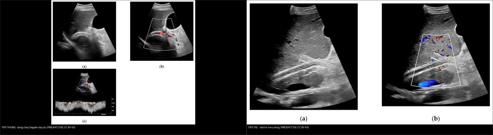
Trái: TIPS thông — tín hiệu dòng Doppler đầy trong stent, dòng liên tục. Phải: TIPS tắc — mất tín hiệu dòng trong lòng stent. Nguồn: Diagnostics 2021 (PMC8472159), CC BY 4.0. Ảnh ghép letterbox.Bốn dấu hiệu hay bị đọc nhầm
- Hẹp "đầu gan" là do stent quá ngắn, không phải do huyết khối: khoảng cách đuôi cranial stent–IVC phải < 1 cm trên chụp mạch 2D; vị trí đuôi cranial dự báo độc lập rối loạn (HR 2,300) (PMC8894460).
- Thuyên tắc SPSS tồn tại song song làm GIẢM rối loạn TIPS (HR 0,319) — nghịch trực giác nhưng do giảm "cạnh tranh" dòng ra (PMC8894460).
- "Shunt hỏng âm thầm" chiếm 2/3 số HD — không chờ triệu chứng (PMC11863994).
- Stent kim loại trên CT có giả ảnh che lòng mạch thật — đối chiếu Doppler/CEUS/DSA.
4. Protocol chụp + hệ phân độ/điểm chuẩn hóa
- Theo dõi siêu âm Doppler (giao thức): sau TIPS đo vận tốc trong stent, vận tốc tĩnh mạch cửa (PVV) và chiều dòng nhánh cửa trong gan, so với ngay sau thủ thuật. PVV ≤ 40,5 cm/s và ΔPVV ≥ 9,5 cm/s là gợi ý rối loạn huyết động (AUROC 0,705 → 0,78) (PMC11863994, PMC8472159).
- CEUS (siêu âm cản âm): quan sát vi bọt (microbubble) trong lòng stent ở độ phân giải không–thời gian cao → phân biệt thông / huyết khối một phần / tắc hoàn toàn. Đồng thuận với CDUS 92,5%, CT 95,3%, MRI 87,9%; tránh bức xạ khi CDUS/CT không rõ (PMC8472159).
- CT bụng–chậu cản quang đa thì: đánh giá vị trí/đường kính stent, hẹp, huyết khối cửa, SPSS, HCC, biến chứng (máu tụ, mật). Lưu ý giả ảnh kim loại.
- DSA (chụp mạch số hóa xóa nền) + đo PPG: tiêu chuẩn vàng — đo áp lực tĩnh mạch cửa và tĩnh mạch chủ dưới/tĩnh mạch gan → tính PPG; nong bóng/stent khi PPG ≥ 12 mmHg. Sau nong: PSG 18,5 → 8 mmHg (PMC10781922).
- Chọn stent/đường kính (step-up): chuẩn 8 mm nhưng 7 mm giảm HE mà không tăng tái xuất huyết ở gan nhỏ (PMC13562823); shunt giãn dần (underdilated) bắt đầu 6 mm; hạn chế đường kính (cTIPS) cho người nguy cơ cao (PMC12717333, PMC13448517).
- Kỹ thuật khi giải phẫu khó: "gun-sight" — đặt snare ở tĩnh mạch gan và tĩnh mạch cửa, luồn kim qua cả hai snare dưới huỳnh quang (khi xơ gan nặng/biến dạng mạch) (PMC13062374).
- Nối dài cranial khi hẹp đầu gan: có thể dùng stent tĩnh mạch chuyên dụng, nối dài trung bình 11,25 ± 2,2 mm, giảm PPG 8,5 ± 2,1 mmHg, không biến chứng (PMC13099945).
flowchart TD
A[Benh nhan da dat TIPS: tai xuat huyet / tai bang / HE] --> B[Doppler: van toc stent + PVV + chieu dong]
B --> C{Nghi roi loan? PVV <= 40,5 hoac dPVV >= 9,5 cm/s}
C -->|Khong| D[Tiep tuc theo doi dinh ky + dieu tri noi khoa]
C -->|Co| E[CEUS hoac CT cang quang]
E --> F{Stent con thong?}
F -->|Tac hoan toan| G[Thai sinh/DSA - tai thong + stent moi]
F -->|Thong nhung hep| H[DSA do PPG]
F -->|Thong tot, khong hep| I[HE do shunt qua lon / nguyen nhan khac -> dieu tri HE]
H --> J{PPG >= 12 mmHg?}
J -->|Co| K[Hep dau gan? -> nong bong + noi dai stent toi gan IVC < 1 cm]
J -->|Khong| D
K --> L[Do lai PPG - dich < 12 mmHg]
5. Biến thể bình thường và cạm bẫy
- Biến thể bình thường: dòng trong stent thay đổi theo nhịp thở/tư thế và góc chùm Doppler — luôn hiệu chỉnh góc ≤ 60° và đo nhiều điểm; bóng khí nhỏ sau thủ thuật không phải huyết khối. SPSS tồn tại song song là bình thường về giải phẫu nhưng ảnh hưởng huyết động (thuyên tắc làm giảm rối loạn TIPS) (PMC8894460).
- Cạm bẫy 1 — hẹp giả do góc/co thắt mạch: hẹp chỉ thật nếu cố định mọi thì và kèm PPG tăng.
- Cạm bẫy 2 — mất dòng giả "tắc": dòng rất chậm có thể không thấy trên CDUS → dùng CEUS/CT trước khi kết luận tắc (PMC8472159).
- Cạm bẫy 3 — "thỏa mãn tìm kiếm": thấy stent thông là dừng → bỏ sót huyết khối cửa tiến triển, SPSS, HCC, HE không do hẹp. Đánh giá đồng thời PPG + nhu mô gan + cửa.
- Cạm bẫy 4 — sai ngưỡng đường kính: "to hơn = tốt hơn" là SAI với HE; 7 mm giảm HE ở gan nhỏ; cTIPS giảm HE nhưng tăng huyết khối/tái can thiệp (PMC13562823, PMC12717333).
- Cạm bẫy 5 — CT bị che bởi giả ảnh kim loại: đối chiếu Doppler/CEUS/DSA; 4D flow MRI là hướng mới đánh giá huyết động định lượng khi các phương thức khác không rõ (PMC13457754).
- Cạm bẫy 6 — HE không phải lúc nào cũng do shunt "quá lớn": trước tiên loại trừ nguyên nhân khác (xuất huyết tiêu hóa, nhiễm trùng, mất nước, thuốc, suy thận) rồi mới nghĩ giảm đường kính.
6. Tự lượng giá — Blind Quiz ngay trên trang tĩnh (không cần app)
Ca 1 — Bệnh nhân sau TIPS, siêu âm Doppler: đọc dòng trong stent trước, so với đối chứng.
- Gợi ý lâm sàng (clinical context): tái xuất huyết tiêu hóa/tái báng bụng; không rõ shunt còn thông.
- Câu hỏi: Hai ảnh khác nhau ở điểm nào? Nếu là ảnh tắc, cần xác nhận bằng gì và đo gì?
Bấm để hiện đáp án (findings + chẩn đoán)
- Dấu hiệu (findings): trái — dòng Doppler đồng nhất, liên tục trong stent (TIPS thông). Phải — mất tín hiệu dòng trong lòng stent (TIPS tắc/mất dòng).
- Chẩn đoán (diagnosis): TIPS tắc hoàn toàn (type 4) — máu không còn đi qua shunt, áp lực cửa tăng lại → tái xuất huyết/tái báng.
- Xác nhận & xử trí: CEUS (tìm vi bọt) hoặc CT/DSA; đo PPG (đích < 12 mmHg); tái thông (thrombectomy) + stent mới.
- Nguồn ảnh: Marschner CA, Geyer T et al., Diagnostics 2021, PMC8472159 (Fig. 1 vs Fig. 2), CC BY 4.0. Ảnh ghép letterbox.
Ca 2 — Bệnh nhân sau TIPS: hẹp ở đâu? (chụp mạch)
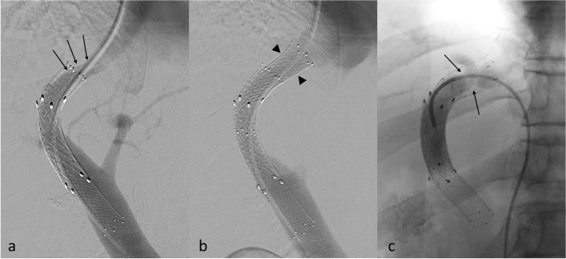
- Gợi ý: PPG ≥ 12 mmHg; tái phát triệu chứng.
- Câu hỏi: Mô tả vị trí hẹp so với đuôi stent; vì sao đây là kiểu "type 1"?
Bấm để hiện đáp án (findings + chẩn đoán)
- Dấu hiệu (findings): (a) DSA: chỗ thắt (stenosis) nằm NGAY SAU đuôi stent, trong tĩnh mạch gan (type 1 DAF). (b) sau khi đặt thêm stent nối dài (bare stent, đầu mũi tên) — lòng thông trở lại.
- Chẩn đoán (diagnosis): rối loạn TIPS type 1 (hẹp đầu gan) — chiếm 69,7% các rối loạn, do stent không phủ đủ lên hợp lưu tĩnh mạch gan–IVC.
- Xử trí: nong bóng + nối dài stent cranial tới gần IVC; đích PPG < 12 mmHg (sau nong: PSG 18,5 → 8 mmHg).
- Nguồn ảnh: Gravel G, Artru F et al., CVIR Endovasc 2024, PMC10781922 (Fig. 3), CC BY 4.0.
Ca 3 — Đo vận tốc cửa trên Doppler có phát hiện "shunt hỏng âm thầm" không?
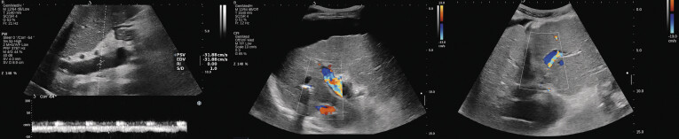
- Gợi ý: bệnh nhân không có triệu chứng nhưng PPG ≥ 12 mmHg.
- Câu hỏi: Thông số nào gợi ý rối loạn huyết động? Ngưỡng là bao nhiêu?
Bấm để hiện đáp án (findings + chẩn đoán)
- Dấu hiệu (findings): (trái) đo vận tốc tĩnh mạch cửa (PVV); (giữa/phải) đánh giá chiều dòng nhánh cửa trong gan.
- Chẩn đoán gợi ý: rối loạn huyết động (PPG ≥ 12 mmHg) dù 67,5% không có triệu chứng — "shunt hỏng âm thầm" ở 43% ca.
- Ngưỡng: PVV ≤ 40,5 cm/s (AUROC 0,705) và ΔPVV ≥ 9,5 cm/s (AUROC lên 0,78).
- Nguồn ảnh: Crăciun R, Ștefănescu H et al., Ultrasound Int Open 2024, PMC11863994 (Fig. 1), CC BY-NC-ND 4.0 (giữ nguyên bản).
Ca 4 — Siêu âm thường không thấy dòng; siêu âm cản âm nói gì?
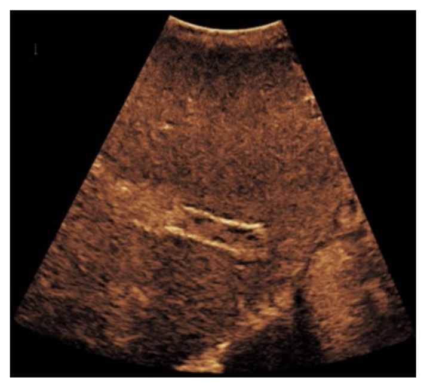
- Câu hỏi: Vì sao thêm siêu âm cản âm (CEUS) lại hữu ích khi Doppler màu không rõ? Hình gợi ý gì?
Bấm để hiện đáp án (findings + chẩn đoán)
- Dấu hiệu (findings): tín hiệu dòng chỉ chiếm một phần trong stent, viền/vùng giảm hồi âm ở bờ = lắng đọng huyết khối.
- Chẩn đoán (diagnosis): huyết khối một phần trong stent (thông một phần nhưng dòng bị hạn chế) → có thể tiến triển thành tắc.
- Vì sao CEUS: CEUS quan sát từng vi bọt ở phân giải cao → phân biệt thông/thông một phần/tắc; đồng thuận CT 95,3%, CDUS 92,5% (PMC8472159).
- Nguồn ảnh: Marschner CA, Geyer T et al., Diagnostics 2021, PMC8472159 (Fig. 6), CC BY 4.0.
Ca 5 — "Gun-sight": khi đường vào cửa quá khó.
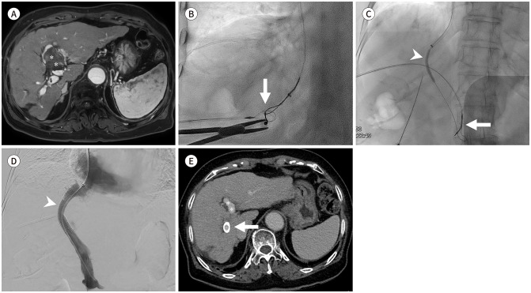
- Gợi ý: xơ gan nặng/giải phẫu biến dạng; kỹ thuật thường quy thất bại.
- Câu hỏi: Kỹ thuật này làm gì khác cách thường quy (snare/needle)?
Bấm để hiện đáp án (findings + chẩn đoán)
- Dấu hiệu (findings): (A) MRI/CT: tĩnh mạch cửa trái giãn dạng phình có huyết khối trong lòng; (B) huỳnh quang: kim (Colapinto needle) ở tĩnh mạch gan phải và snare ở tĩnh mạch cửa — hướng "gun-sight" để kim xuyên đúng hai snare.
- Chẩn đoán (diagnosis): tạo TIPS bằng kỹ thuật gun-sight — chỉ định khi không tiếp cận được tĩnh mạch cửa bằng cách thường quy (giải phẫu biến dạng, xơ gan nặng).
- Ý nghĩa: tăng tỉ lệ thành công kỹ thuật khi cách chuẩn thất bại; vẫn dựa trên snare 2 đầu + kim dưới huỳnh quang.
- Nguồn ảnh: Nam IC, Lee HN et al., J Korean Soc Radiol 2026, PMC13062374 (Fig. 1), CC BY-NC 4.0 (giữ nguyên bản).
Ca 6 — TIPS cho huyết khối tĩnh mạch cửa (PVT).
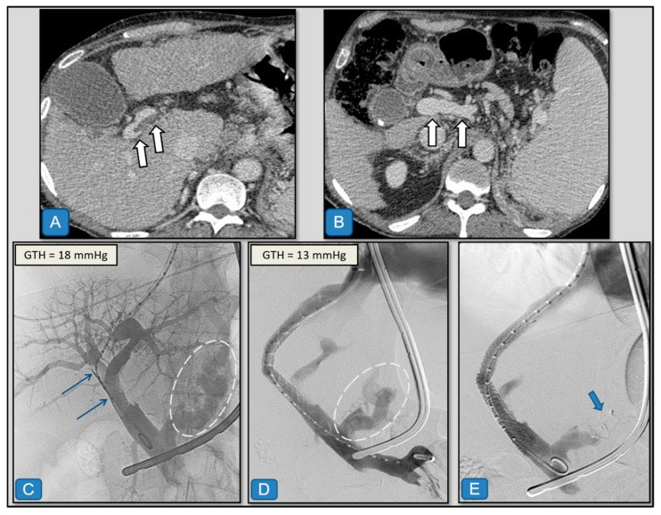
- Gợi ý: xơ gan + giãn tĩnh mạch thực quản–dạ dày chảy máu + huyết khối cửa.
- Câu hỏi: Mục tiêu của TIPS ở đây khác dự phòng xuất huyết thông thường ở điểm nào?
Bấm để hiện đáp án (findings + chẩn đoán)
- Dấu hiệu (findings): (A, B) CT cản quang thì cửa: huyết khối cửa và tuần hoàn bàng hệ; sau đó chụp mạch tạo đường hầm TIPS.
- Chẩn đoán (diagnosis): PVR-TIPS — tái thông tĩnh mạch cửa đồng thời tạo shunt; thành công 75–100%, giúp nối cửa–cửa khi ghép gan 96–100% (PMC13469255). Cohort PVT: thành công đặt 100%, thông trung bình 40,3 tháng, rối loạn 30,3%, trẻ em nguy cơ cao (HR 4,85) (PMC12650949).
- Nguồn ảnh: Barranco Acosta S et al., Diagnostics 2025, PMC12650949 (Fig. 2), CC BY 4.0.
Ca 7 — Giãn tĩnh mạch dạ dày: vì sao phải hiểu giải phẫu trước khi chọn TIPS?
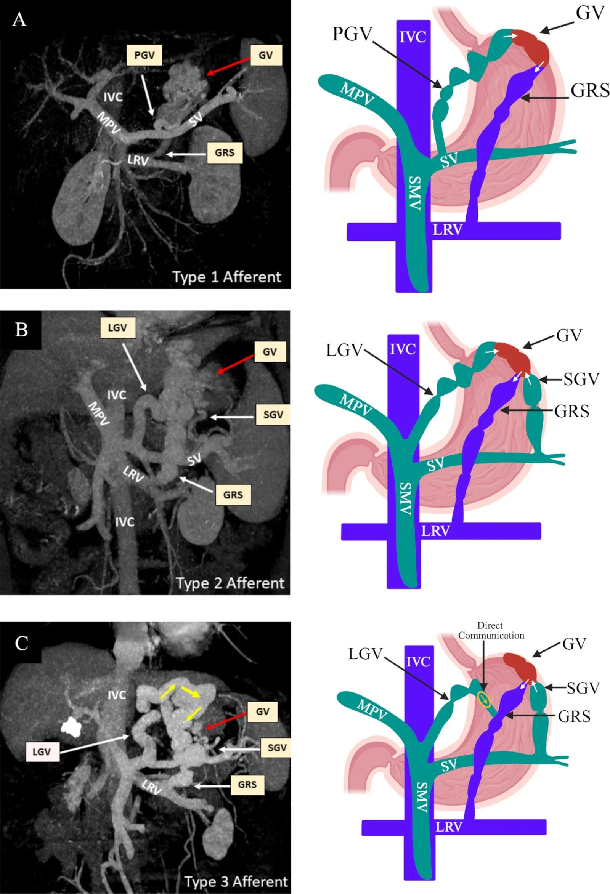
- Câu hỏi: Phân loại đường vào (afferent) quyết định chọn TIPS hay thuyên tắc ngược thế nào?
Bấm để hiện đáp án (findings + chẩn đoán)
- Dấu hiệu (findings): sơ đồ đường vào tĩnh mạch của GV theo phân loại Kiyosue kèm ảnh MIP-portography thì cửa tương ứng.
- Chẩn đoán/ý nghĩa: GV gặp ở 20% người tăng áp cửa, chảy máu ít nhưng mất máu/nhu cầu truyền máu/tử vong cao hơn giãn tĩnh mạch thực quản. TIPS đi qua đường cửa; RTO đi qua tĩnh mạch thận trái. Chọn theo đường vào/ra (Kiyosue) và bối cảnh (báng, HE) (PMC13599983).
- Nguồn ảnh: Biswas S, Gupta S et al., BMJ Open Gastroenterol 2026, PMC13599983 (Fig. 2), CC BY-NC 4.0 (giữ nguyên bản).
Ca 8 — Shunt cửa–chủ tự phát (SPSS): vì sao lại ảnh hưởng TIPS?
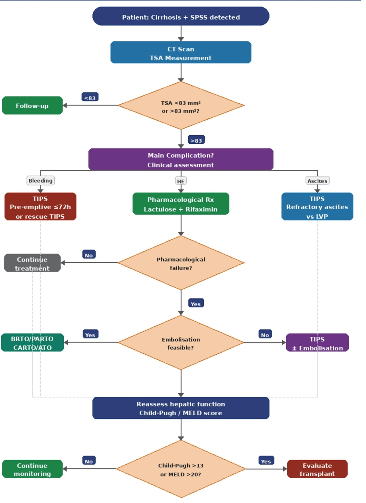
- Câu hỏi: SPSS lớn liên quan thế nào đến rối loạn TIPS, và hướng xử trí trên sơ đồ?
Bấm để hiện đáp án (findings + chẩn đoán)
- Dấu hiệu (findings): sơ đồ/ thuật toán cho bệnh nhân xơ gan có SPSS lớn, có nhánh TIPS và TSA (tổng diện tích shunt).
- Chẩn đoán/ý nghĩa: SPSS tồn tại song song làm GIẢM rối loạn TIPS (HR 0,319) nhưng là yếu tố của HE; thuyên tắc SPSS được cân nhắc để giảm HE (PMC8894460, PMC13645364).
- Nguồn ảnh: Ntalaoutis A, Troupis T et al., Cureus, PMC13645364 (Fig. 3), CC BY 4.0.
Ca 9 — Hình học stent trên chụp mạch 2D: đuôi cranial cách IVC bao xa?
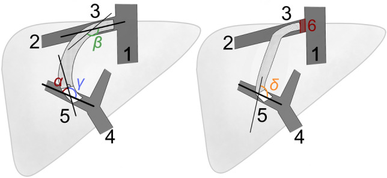
- Câu hỏi: Thông số hình học nào dự báo độc lập rối loạn TIPS? Ngưỡng khoảng cách?
Bấm để hiện đáp án (findings + chẩn đoán)
- Dấu hiệu (findings): sơ đồ đo các góc/góc uốn và vị trí đuôi cranial stent (1: IVC; 2: tĩnh mạch gan; 3: đuôi cranial; 4: tĩnh mạch cửa; 5: đuôi xa).
- Chẩn đoán/ý nghĩa: vị trí đuôi cranial dự báo độc lập rối loạn TIPS (HR 2,300); khuyến nghị khoảng cách đuôi cranial–IVC < 1 cm trên chụp mạch 2D (PMC8894460).
- Nguồn ảnh: Meyer C, Paar Pérez AM et al., Sci Rep 2022, PMC8894460 (Fig. 2), CC BY 4.0.
Ca 10 — Hẹp đầu gan: chụp mạch trước và sau khi nối dài cranial.
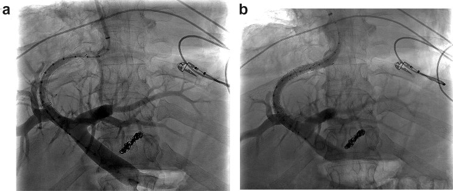
- Câu hỏi: Mô tả thay đổi trước–sau; vì sao nối dài cranial lại giải quyết hẹp type 1?
Bấm để hiện đáp án (findings + chẩn đoán)
- Dấu hiệu (findings): (a) DSA trước nong: hẹp ở đầu cranial stent; (b) sau nong thành công + nối dài cranial: lòng thông rộng ra.
- Chẩn đoán (diagnosis): rối loạn TIPS do hẹp đầu gan — nối dài cranial đưa đuôi stent về gần IVC → PPG giảm.
- Xử trí bổ sung: có thể dùng stent tĩnh mạch chuyên dụng: nối dài 11,25 ± 2,2 mm, giảm PPG 8,5 ± 2,1 mmHg (PMC13099945).
- Nguồn ảnh: Meyer C, Paar Pérez AM et al., Sci Rep 2022, PMC8894460 (Fig. 3), CC BY 4.0.
Ca 11 — Nối dài cranial bằng stent tĩnh mạch chuyên dụng (khi hẹp tái phát).
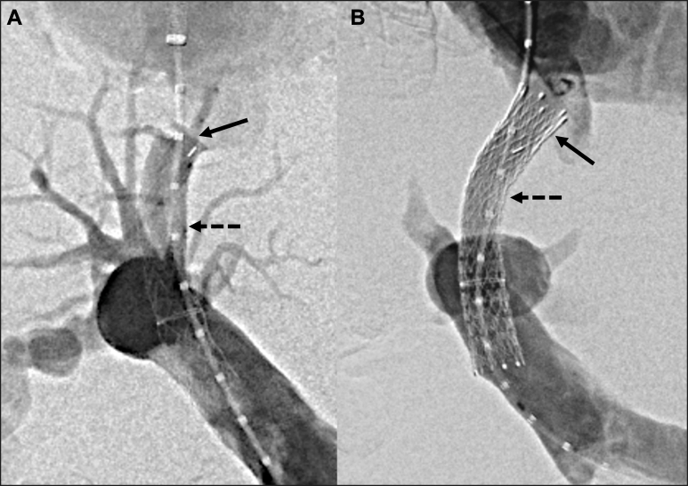
- Gợi ý: báng bụng kháng trị tái phát 149 ngày sau TIPS.
- Câu hỏi: Vì sao phải nối dài về phía IVC, và dùng stent gì?
Bấm để hiện đáp án (findings + chẩn đoán)
- Dấu hiệu (findings): chụp mạch TIPS + đặt stent tĩnh mạch chuyên dụng (Venovo/Abre) nối dài shunt về phía IVC.
- Chẩn đoán (diagnosis): rối loạn TIPS do tắc nghẽn dòng ra ở đầu tĩnh mạch gan — do stent không phủ đủ cranial.
- Xử trí: nối dài cranial 11,25 ± 2,2 mm, giảm PPG 8,5 ± 2,1 mmHg, không biến chứng (PMC13099945).
- Nguồn ảnh: Cyphers ED, Chau SS et al., J Vasc Surg Cases Innov Tech 2026, PMC13099945 (Fig. 2), CC BY-NC-ND 4.0 (giữ nguyên bản).
Bài liên quan chéo
- 100 – Tổng quan hệ Bụng
- 124 – Bệnh mạch máu gan: Budd-Chiari, SOS/VOD & huyết khối tĩnh mạch cửa
- 125 – Gan mỡ & xơ hóa gan
- 126 – Đo thể tích gan & điều trị nội khoa PLD
- 127 – Gan tim (cardiac hepatopathy) & tăng áp cửa trước xoang
- 135 – Viêm tụy cấp (Atlanta)
- 140 – Lách & chấn thương tạng đặc
- 163 – Pylephlebitis & huyết khối tĩnh mạch mạc treo
- 175 – Chèn ép mạch & nút mạch
- 910 – Dẫn lưu (áp-xe, PTBD & thận qua da)
- 930 – TACE/LR-TR (can thiệp u gan)
Ảnh
- Tên file:
176_slug_Modality_SourceID.jpg. Nguồn + giấy phép (license) từng ảnh trongimages/CREDITS.md. - Ảnh CC BY 4.0 được phép ghép letterbox (composite); ảnh CC BY-NC 4.0 / CC BY-NC-ND 4.0 giữ nguyên bản, không crop/không ghép.
- AuntMinnie (Case of the Day): chỉ dẫn link, không tải.
Không dùng để chẩn đoán độc lập khi chưa có người hướng dẫn.